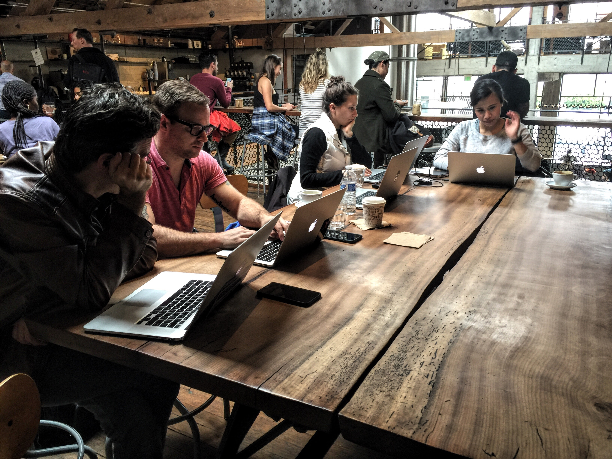
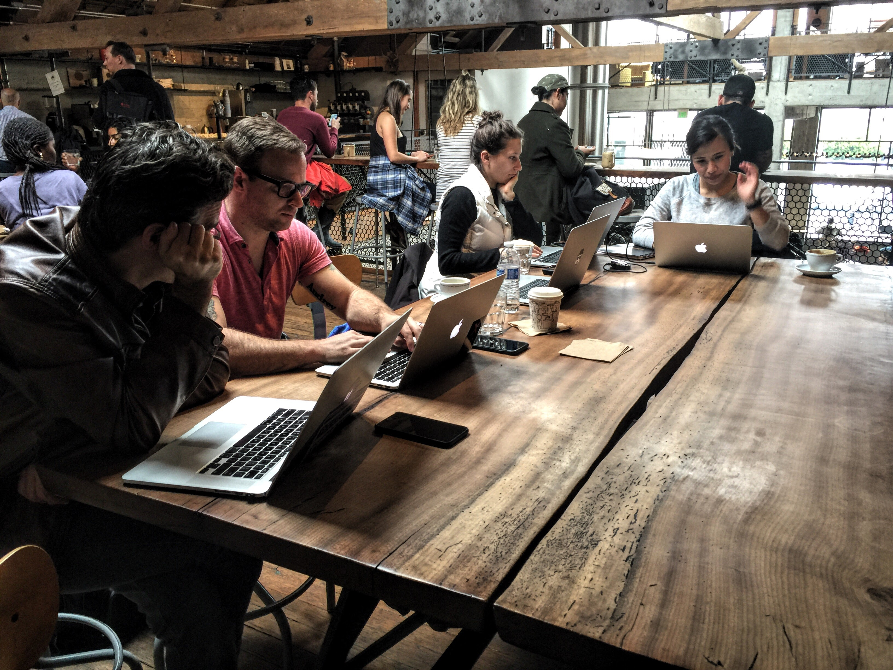

I’ve been very fortunate to have been apart impacting BloomBoard at the core. When I first joined remote teams functioned separately without good collaboration. I was able to spark a flame and was able to be impactful of change. I was able to impact change by leading by example. I was a key member of teams that were crucial in developing what BloomBoard is and how they function Today.
I’m a thinker and maker who thrives on ambiguity and challenging problems. Let me take you through some of the journeys I had with BloomBoard over the last 2 1/2 years.
 

When I started I was brought on to a scrappy R&D team. The goal was to quickly develop several products, launch, and gauge product market fit, and gather user feedback.
We were a separate group from the rest of BloomBoard and were able to do things that were previously not possible by the rest BloomBoard. I came in a hit the group running.
The main product we wanted to test was topsoil. It was a goal setting app that you can track steps on goals, collect ideas, collaborate with mentors, and get peer feedback.
I was performing dual roles at this time. UX and design, as well as front and back end implementation. The stack was a Ruby/Rails backend powered by angular on the front end.
I designed, implemented, and tested in rapid succession. We were able to launch Topsoil in a really short period of time.
Developed first style guide.
Core team for new product.
Built first version prototype for sales and kickstarted transition to react.
Deep UX / User research.
Initial site launch.
mc's.
Cross team style guide (Atomic Design).
programs.
Component based style guide (CSS Modules BBUI).
Prototype next big thing from bloomboard.